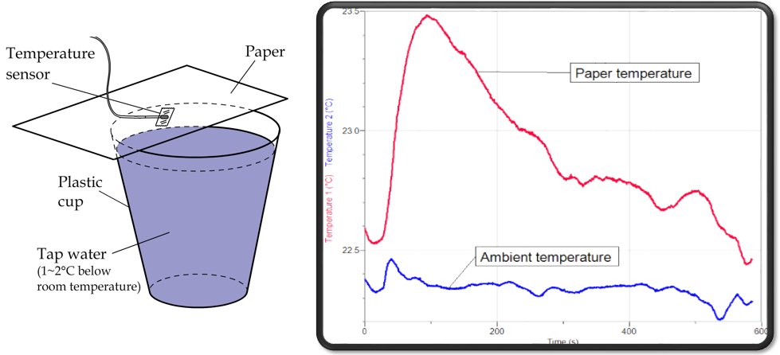
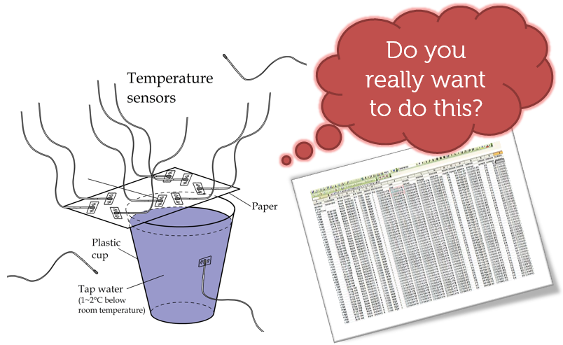
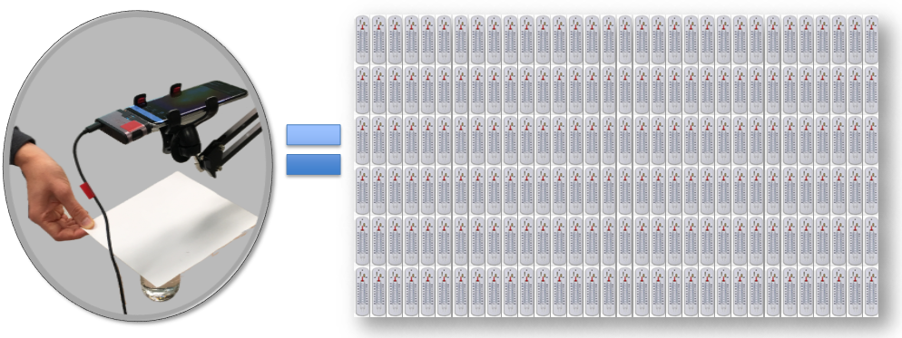

From Sensing to Imaging: The Power of Many
By Charles Xie ✉
Back to Infrared Explorer home page
Listen to a podcast about this article
There is a long history of using sensors to promote inquiry in science education, pioneered notably by Dr. Robert F. Tinker more than three decades ago. In most cases, a few sensors are used to measure certain physical or chemical properties. These sensors are then connected to a computer that logs their measurements. Students typically use a line graph to plot the incoming data as a function of time to visualize the scientific effect under investigation. Through observing how a property changes in response to a stimulus in the real world, students develop a concrete idea about the causal relationship between the variables in question. The following image shows an example of using two temperature sensors to investigate the paper-on-cup experiment, which shows the warming of a piece of dry paper when it is placed atop a cup of water that is at a thermal equilibrium with the environment.

Using two temperature sensors to investigate the warming of a piece of paper on top of a cup of water
Since students can arbitrarily position a sensor in an experiment, educators often need to explicitly prescribe where and when students should put it in order to capture the data as intended. For instance, in the paper-on-cup experiment, a temperature sensor must be taped onto the part of paper that will be directly above the water in the cup. While this type of cookbook-like instruction ensures that students do not miss the chance to observe the due phenomenon, it may deprive them of the opportunities to make their own scientific discoveries and the excitement experienced in such intellectual processes.
Thermal imaging provides an innovative technology to support authentic science inquiry without taking away the joy of discovery. A thermal camera automatically gathers a large array of radiometric data for immediately rendering an intuitive, salient heat map visualization of a phenomenon that is easy for the brain to process. Such a real-time, full-field visualization of an experiment enables students to discover important details that would otherwise go unnoticed. Data collection is also made as convenient as taking a picture or recording a video just like using a conventional digital camera, freeing students from tedious procedures and focusing them on the fun part of science. These affordances of the technology were also largely responsible for our accidental discovery of the subtle warming effect of paper above water (and other intriguing phenomena that might have never been reported in scientific literature) back in 2010.

→
Compare sensing and imaging for the paper-on-cup experiment
Such transformative potential would not have been possible without the power of many: Compared with a single thermometer that outputs only a data point at a time, a thermal camera bundles thousands of microbolometers in a small optoelectronic device to produce a large quantity of data at once.

A thermal camera consists of thousands of tiny temperature sensors called microbolometers
With our Infrared Explorer app based on the FLIR ONE thermal camera, users can record an experiment and then add any number of virtual thermometers later to retrieve the time series captured by any microbolometers, as shown by the three virtual thermometers in the above thermal image for the Yin-Yang shape. This is a significant improvement compared with recording an experiment using only one sensor. If we make a mistake by placing the sensor at a wrong spot, we would have to redo the experiment. But with the new technology, we just need to move a virtual sensor around to get the correct data.
From one sensor at a time to thousands of sensors at a time, the technology for inquiry has evolved from sensing to imaging. As a picture is worth a thousand words, imaging uncovers a whole new world of experience and interaction that can greatly accelerate and deepen scientific inquiry. In some way, this type of technology has opened a new frontier of research and development to commemorate Dr. Tinker and advance his vision of science education.